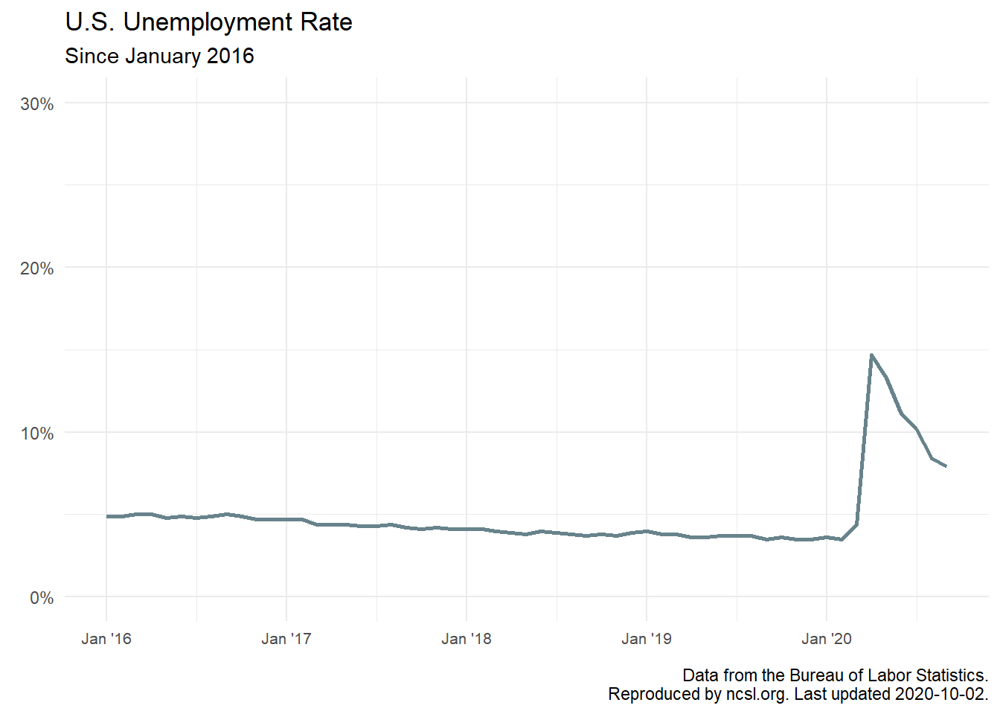

In this short post, I am going to introduce you to web scraping in R using the rvest package. In another post (part II), I’ll show you maybe the most popular method for pulling data from the web: using a web API. httr will help us send HTTP requests to an API server and get back data in JSON format (which we can then parse with the jsonlite package). But for today, let’s discuss web scraping.
HTML tables
I am going to show you the simplest case of web scraping: when there is one table on a public facing webpage that we can identify by the HTML <table> tag. Lately, I’ve been interested in tracking the U.S. unemployment rate from the Bureau of Labor Statistics. There is a nicely formatted table on the National Conference of State Legislatures’ website. Let’s try to scrape the single table on this webpage.
Using rvest
With rvest, the first step is to use the read_html() function and supply the URL. From there, we can pipe to the html_nodes() function, and supply the tag we want. This acts as a CSS selector; it doesn’t actually parse the data in the table.
library(tidyverse)
library(rvest)
library(lubridate)
library(scales)
unemploy_webpage <- read_html("https://www.ncsl.org/research/labor-and-employment/national-employment-monthly-update.aspx")
unemploy_webpage %>%
html_nodes("table")## {xml_nodeset (1)}
## [1] <table border="0" cellpadding="0" cellspacing="0" class="table table-cond ...To actually parse the data, we pipe to the html_table() function.
unemploy_webpage %>%
html_nodes("table") %>%
html_table()## [[1]]
## January February March April May June July August September October
## 1 2020 3.6 3.5 4.4 14.7 13.3 11.1 10.2 8.4 7.9 NA
## 2 2019 4.0 3.8 3.8 3.6 3.6 3.7 3.7 3.7 3.5 3.6
## 3 2018 4.1 4.1 4.0 3.9 3.8 4.0 3.9 3.8 3.7 3.8
## 4 2017 4.7 4.7 4.4 4.4 4.4 4.3 4.3 4.4 4.2 4.1
## 5 2016 4.9 4.9 5.0 5.0 4.8 4.9 4.8 4.9 5.0 4.9
## 6 2015 5.7 5.5 5.4 5.4 5.6 5.3 5.2 5.1 5.0 5.0
## 7 2014 6.6 6.7 6.7 6.2 6.3 6.1 6.2 6.1 5.9 5.7
## 8 2013 8.0 7.7 7.5 7.6 7.5 7.5 7.3 7.2 7.2 7.2
## 9 2012 8.3 8.3 8.2 8.2 8.2 8.2 8.2 8.1 7.8 7.8
## 10 2011 9.1 9.0 9.0 9.1 9.0 9.1 9.0 9.0 9.0 8.8
## 11 2010 9.8 9.8 9.9 9.9 9.6 9.4 9.4 9.5 9.5 9.4
## 12 2009 7.8 8.3 8.7 9.0 9.4 9.5 9.5 9.6 9.8 10.0
## 13 2008 4.9 4.8 5.1 5.0 5.5 5.6 5.8 6.2 6.2 6.6
## November December
## 1 NA NA
## 2 3.5 3.5
## 3 3.7 3.9
## 4 4.2 4.1
## 5 4.7 4.7
## 6 5.1 5.0
## 7 5.8 5.6
## 8 6.9 6.7
## 9 7.7 7.9
## 10 8.6 8.5
## 11 9.8 9.3
## 12 9.9 9.9
## 13 6.8 7.2Man, that was easy! One thing that makes this example extremely simple is that there is only one table on this webpage. If there were more than one, each would be contained as an element in this list (that is, if they were each properly tagged with <table>). Below, I use str() to verify that this is indeed a list with one element, containing the data frame of unemployment rates we want. I’ll save this list off.
unemploy_webpage %>%
html_nodes("table") %>%
html_table() %>%
str()## List of 1
## $ :'data.frame': 13 obs. of 13 variables:
## ..$ : int [1:13] 2020 2019 2018 2017 2016 2015 2014 2013 2012 2011 ...
## ..$ January : num [1:13] 3.6 4 4.1 4.7 4.9 5.7 6.6 8 8.3 9.1 ...
## ..$ February : num [1:13] 3.5 3.8 4.1 4.7 4.9 5.5 6.7 7.7 8.3 9 ...
## ..$ March : num [1:13] 4.4 3.8 4 4.4 5 5.4 6.7 7.5 8.2 9 ...
## ..$ April : num [1:13] 14.7 3.6 3.9 4.4 5 5.4 6.2 7.6 8.2 9.1 ...
## ..$ May : num [1:13] 13.3 3.6 3.8 4.4 4.8 5.6 6.3 7.5 8.2 9 ...
## ..$ June : num [1:13] 11.1 3.7 4 4.3 4.9 5.3 6.1 7.5 8.2 9.1 ...
## ..$ July : num [1:13] 10.2 3.7 3.9 4.3 4.8 5.2 6.2 7.3 8.2 9 ...
## ..$ August : num [1:13] 8.4 3.7 3.8 4.4 4.9 5.1 6.1 7.2 8.1 9 ...
## ..$ September: num [1:13] 7.9 3.5 3.7 4.2 5 5 5.9 7.2 7.8 9 ...
## ..$ October : num [1:13] NA 3.6 3.8 4.1 4.9 5 5.7 7.2 7.8 8.8 ...
## ..$ November : num [1:13] NA 3.5 3.7 4.2 4.7 5.1 5.8 6.9 7.7 8.6 ...
## ..$ December : num [1:13] NA 3.5 3.9 4.1 4.7 5 5.6 6.7 7.9 8.5 ...unemploy_list <- unemploy_webpage %>%
html_nodes("table") %>%
html_table()Base R
Next, I’m just going to do some base R to subset the list and assign a name to the column that contains the year.
unemploy_df <- unemploy_list[[1]]
colnames(unemploy_df)[1] <- "year"
str(unemploy_df)## 'data.frame': 13 obs. of 13 variables:
## $ year : int 2020 2019 2018 2017 2016 2015 2014 2013 2012 2011 ...
## $ January : num 3.6 4 4.1 4.7 4.9 5.7 6.6 8 8.3 9.1 ...
## $ February : num 3.5 3.8 4.1 4.7 4.9 5.5 6.7 7.7 8.3 9 ...
## $ March : num 4.4 3.8 4 4.4 5 5.4 6.7 7.5 8.2 9 ...
## $ April : num 14.7 3.6 3.9 4.4 5 5.4 6.2 7.6 8.2 9.1 ...
## $ May : num 13.3 3.6 3.8 4.4 4.8 5.6 6.3 7.5 8.2 9 ...
## $ June : num 11.1 3.7 4 4.3 4.9 5.3 6.1 7.5 8.2 9.1 ...
## $ July : num 10.2 3.7 3.9 4.3 4.8 5.2 6.2 7.3 8.2 9 ...
## $ August : num 8.4 3.7 3.8 4.4 4.9 5.1 6.1 7.2 8.1 9 ...
## $ September: num 7.9 3.5 3.7 4.2 5 5 5.9 7.2 7.8 9 ...
## $ October : num NA 3.6 3.8 4.1 4.9 5 5.7 7.2 7.8 8.8 ...
## $ November : num NA 3.5 3.7 4.2 4.7 5.1 5.8 6.9 7.7 8.6 ...
## $ December : num NA 3.5 3.9 4.1 4.7 5 5.6 6.7 7.9 8.5 ...Tidying up
Next, I’ll pipe this data frame to a tibble data type and then pivot longer and clean up some of the date data for easier plotting.
unemploy_final <- unemploy_df %>%
as_tibble() %>%
pivot_longer(cols = -c("year"),
names_to = "month",
values_to = "unemployment_rate") %>%
mutate(date = mdy(paste0(month, "/01", year)),
month = month(date, label = TRUE),
unemployment_rate = unemployment_rate / 100) %>%
select(date, everything())
unemploy_final## # A tibble: 156 x 4
## date year month unemployment_rate
## <date> <int> <ord> <dbl>
## 1 2020-01-01 2020 Jan 0.036
## 2 2020-02-01 2020 Feb 0.035
## 3 2020-03-01 2020 Mar 0.044
## 4 2020-04-01 2020 Apr 0.147
## 5 2020-05-01 2020 May 0.133
## 6 2020-06-01 2020 Jun 0.111
## 7 2020-07-01 2020 Jul 0.102
## 8 2020-08-01 2020 Aug 0.084
## 9 2020-09-01 2020 Sep 0.079
## 10 2020-10-01 2020 Oct NA
## # ... with 146 more rowsNow, it’s in perfect shape for a time series, highlighting the massive spike when COVID-19 shut the economy down.
unemploy_final %>%
filter(date >= "2016-01-01" & !is.na(unemployment_rate)) %>%
ggplot(aes(x = date, y = unemployment_rate)) +
geom_line(size = 1, color = "lightblue4") +
scale_y_continuous(limits = c(0, 0.3), labels = percent_format()) +
scale_x_date(breaks = "1 year", labels = date_format(format = "%b '%y")) +
theme_minimal() +
theme(axis.text.x = element_text(size = 8)) +
labs(title = "U.S. Unemployment Rate",
subtitle = "Since January 2016",
x = element_blank(),
y = element_blank(),
caption = paste0("Data from the Bureau of Labor Statistics.\nReproduced by ncsl.org. Last updated ", Sys.Date(), "."))